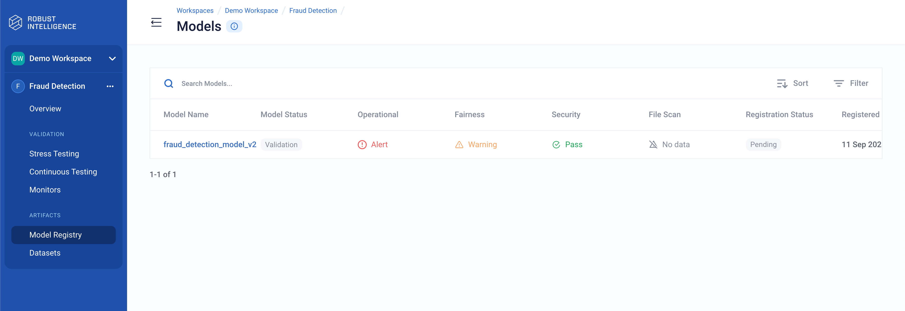

Model Registry
Once you’ve registered a model in Robust Intelligence, it appears in the Models Panel with summary status information. You can view more detailed information about the model and its risk in the Model Info panel.
Check the Risk Status of a Registered Model
To view the registered models in a project and see their latest risk status, follow these steps:
Sign in to a Robust Intelligence instance or click Workspaces in the right navigation panel.
In the Workspaces page, click the name of your workspace.
From the list of projects, click on the name of your project.
In the left navigation panel, click on Model Registry.
The Models panel shows the models currently registered or pending registration in this project.
View a Registered Model
To see a registered model’s metadata and latest assessments, follow these steps:
Sign in to a Robust Intelligence instance or click Workspaces in the right navigation panel.
In the Workspaces page, click the name of your workspace.
From the list of projects, click on the name of your project.
In the left navigation panel, click on Model Registry.
Click on your model’s row in the list to open the Model Info panel.
The Model Info panel shows the following aspects of your registered model:
Model Info shows your model’s registration parameters including its Name, Model ID (click the copy icon to copy the model’s UUID), Integration, Model Endpoint Integration, Model Path (click the copy icon to copy the model’s path), Model status (Validation or Production), External ID, Registration Status, Registration Date, and Registered By (person who registered the model). See Registering Models for more information.
Model alerts: Provides a link to the Events list, where you can view this model’s alerts in this project.
Stress test runs: Provides a link to the Stress Testing panel, where you can view this model’s stress test runs in this project.
Production test history: Provides a link to the Continuous Testing panel, where you can view this model’s continuous test runs in this project.
Latest Risk Overview shows the Operational, Fairness, and Security risk assessments from the latest test run. See Continuous Testing Feedback and Observability.
File Scan shows the vulnerability assessment of the test datasets used with this model.